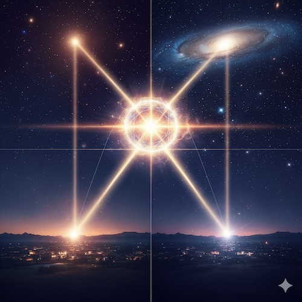

Глава 5. Теория Аспектов [МНА] (Аспектология)
Содержание:
5.1 Парадигмальный Сдвиг: От "Углов" к "Целям [Поля]"
5.2 Динамическая Модель: Непрерывный Процесс Вместо Статичной Таблицы
5.3 Фазовая Структура Синодического Цикла Планет
5.4 Кардинальные Аспекты: Пики Фазовых Переходов
5.5 Реальные и Темпоральные Аспекты
5.6 Аспект Подобия: Резонанс по Фазе

Введение: Динамика взаимодействия и логика точности
Как маркеры взаимодействуют друг с другом? Традиционная астрология рассматривает аспекты как статичные "линии влияния". [МНА] предлагает радикально иную интерпретацию:
- Аспекты — это не статичные состояния, а маркеры фазовых переходов в непрерывном цикле постановки целей.
- Точность (Орбисы) строго выводится из фундаментальных единиц человеческого восприятия — Солнечного Дня и Лунного Цикла.
5.1 Парадигмальный Сдвиг: От "Углов" к "Целям [Поля]"
Планетарные аспекты — это маркеры ключевых этапов внутреннего целеполагания самого [Поля]. Когда две планеты образуют аспект, сам процесс [Поля] переходит на новый этап развития. Кардинальные аспекты медленных планет — это моменты, когда [Поле] ставит себе новую глобальную Цель.
5.2 Динамическая Модель: Непрерывный Процесс
В [МНА] любые две планеты всегда находятся во взаимодействии в рамках их синодического цикла. Взаимодействие постоянно меняет свое качество, проходя через 12 фаз (фоновый климат) и 4 кардинальные точки (пиковые события).
5.3 Фазовая Структура Синодического Цикла
Цикл делится на 4 квадранта (Формирование, Рост, Распределение, Завершение), каждый из которых содержит 3 фазы (Импульс → Поток → Накопление). Всего 12 фаз, описывающих эволюцию отношений между двумя принципами.
5.4 Кардинальные Аспекты: Пики Фазовых Переходов
Четыре особых точки цикла (0°, 90°, 180°, 270°) являются моментами фазовых переходов с максимальной интенсивностью:
- 0° (Соединение): Точка Инициации (Семя). Слияние принципов в единый импульс.
- 90° (Квадрат): Активное Продвижение. Кризис действия, требующий волевого усилия.
- 180° (Оппозиция): Кульминация. Пик напряжения, точка осознания или коллапса.
- 270° (Квадрат): Интеграция. Консолидация опыта и подготовка к завершению.
Система Градиентных Орбисов
Орбисы описывают пределы человеческой чувствительности, а не физику планет:
- Фокус (±1°): Сознательное событие. Соответствует суточному движению Солнца.
- Поле (±6.5°): Подсознательное сканирование. Радиус сканирования Луны за сутки.
- Периферия (±13°): Фоновая атмосфера. Полное суточное движение Луны.
5.5 Реальные и Темпоральные Аспекты
- Реальный аспект: Объективное состояние [Поля] "здесь и сейчас". Потенциал события для всех наблюдателей.
- Темпоральный аспект: Активация натального резонансного отпечатка транзитной планетой. Психологическая настройка восприятия.
Событие рождается в точке пересечения: Энергии в Поле (Реал), Склонности человека (Натал) и Триггера (Темпорал).
5.6 Аспект Подобия: Резонанс по Фазе
Возникает, когда угловое расстояние между двумя парами планет совпадает. Это резонанс по фазе цикла, указывающий на структурное сходство без динамического напряжения ("климатическое сходство"). Особенно значим в синастрии для глубокого взаимопонимания.